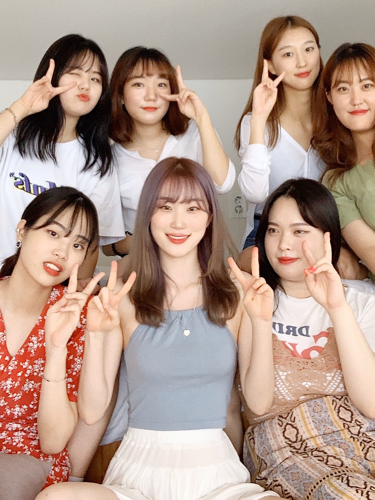

°˖✧강릉✧˖°

저는 여름방학 때 우리 과 친구들과 함께 강릉 여행을 다녀왔어요.
KTX를 타면 약 3시간 만에 강릉에 도착할 수 있는데요, 근처에 홈플러스가 있으니 곧장 달려 가서 술과 먹거리들을
마구마구 쓸어 담아 줍시다. (매주 수요일은 휴무일이니 주의하세요...)
숙소로는 '휴 스파 펜션'이라는 곳을 선택했어요. 저희는 인원 수가 많아 그러지 못했지만 소수 인원 방을 잡으시면
방 안에서 오션뷰를 즐기며 스파를 하실 수 있답니다.
비록 스파는 할 수 없었지만 오션뷰만은 맘껏 즐길 수 있었는데요, 날씨가 좋지 않았음에도 불구하고 통유리 창 밖으로
보이는 강릉 바다의 절경은 그야말로 장관이었어요.
강릉에는 안목해변, 경포해변, 사천해변 등 바다가 많아서 어느 쪽으로 여행을 갈지 고민하실 수 있는데요.
저희 같은 경우에는 저희끼리 놀 수 있는 평화로운 느낌의 해변을 원했기 때문에 주문진 해변을 선택했어요.
여름 바다에서 느낄 수 있는 젊음과 시끌벅적함을 느끼고 싶으신 분들은 경포 해수욕장으로 가세요 :>
저희는 날씨 탓에 하지 못했지만, 여름 바다의 꽃은 뭐니뭐니해도 밤바다에서의 불꽃놀이와 맥주라고 생각해요!
여러분들은 언젠가 강릉으로 떠나시게 된다면 꼭 한 번 해보시길 바라요.
저의 강릉 여행 소개, 도움 되셨나요? 그럼 다들 행복과 즐거움이 가득한 여행 하시길 언제나 기원합니다. 안뇽!